___
___
___
___
___
___
___
等级:midden
朱星调查
「朱星」一词最早在#2024000207中出现过，但非一级名，但从此报告起，其作为一级名称。
D00001
朱油星 -1- to -3-
朱星-- -2- to -1-
朱人星 -3- to -2-
等级:main(locked)
朱星位置与星环
太阳的行星地球在近日点(东半球夏)的方向往俯视视界北方约350亿千米位置
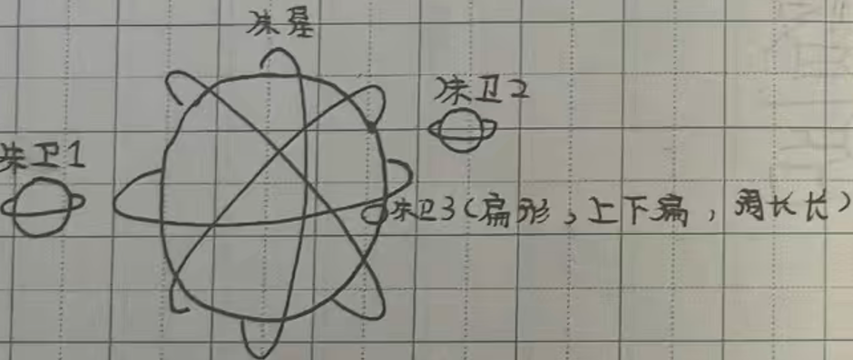
朱星，拥有 4 个星环,3 个中小型卫星，星环每一条可引约 38000 颗陨石（不包括彗星）， 如超过的量会引起自身陨石与相垂直星环的陨石装置交叉点，重组为巨石，为 2 半，一半飞往宇宙，另外的飞下交叉点，平均每 180 个地球日出现一次。
等级:main(locked)
朱星气候环境与行星状态
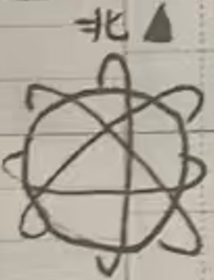
公转:自西向东,转一周时间约180地球日
自转:自东向西
天气:
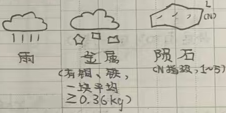
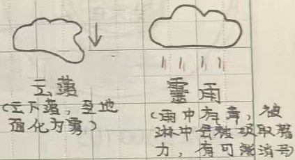
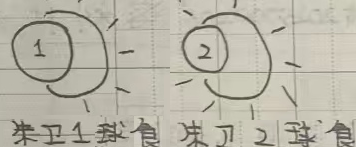
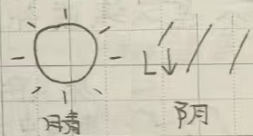
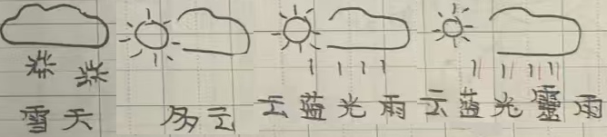
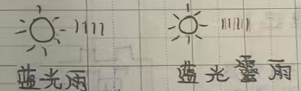
等级:tall+(locked)
朱星结构
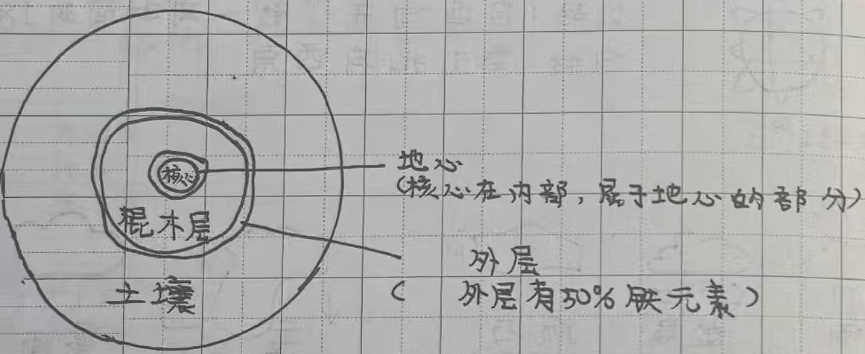
等级:main(locked)
朱星生物,(续或关于)#2024000206科技文化内容
[喜题最长标题]
朱人防照射
朱星中天空为肉眼可见的深蓝色:而朱人身体可以抵抗50%阳光照射。
朱人科技(通迅):
朱人使用朱线电波传输信息，目前，朱人己经开发出了AGI(只能从身一面的人工智能)，在朱星的主流AGI有猪包、deepigseek、金马内、ChatPIG、closeAI、SOPA等等
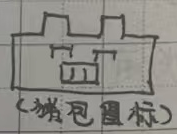
等级:best tall+(locked)
朱星文化(关于#2024000206)
朱星监狱
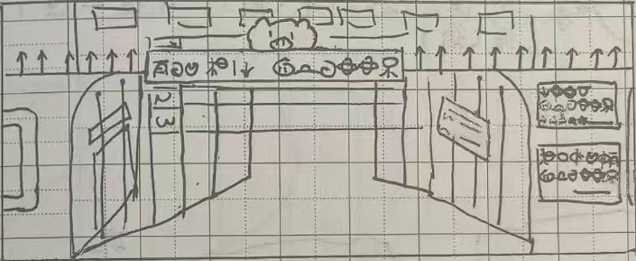
朱星学校
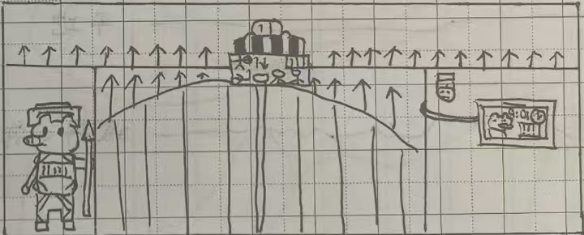
等级:
朱星卫星(朱卫1)
椭圆,纬线偏长，赤道鼓
半径7723千米(约),赤道半径7749千米(约)
地表图
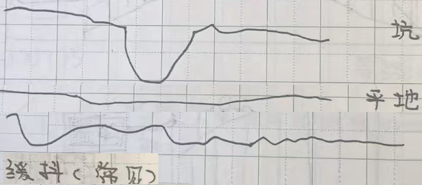
偏平,有时缓抖动。右图为科研飞船着地图片,下为造成土地变化。
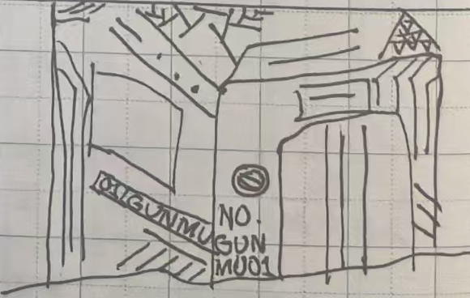
等级:
等级:
等级: